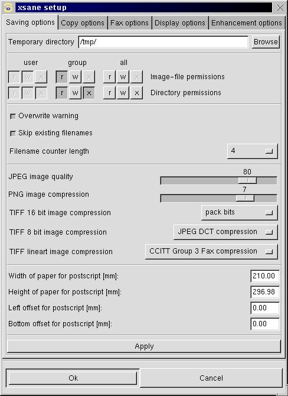

Saving setup

PERMISSIONS:
You can set permissions with which a file or directory is created. The user permissions are not changeable because needs the predefined user permissions for correct function.
OVERWRITE WARNING:
If enabled, a warning comes up before an existing file is overwritten.SKIP EXISTING NUMBERS:
If increase filename counter is enabled, filenames that already exist are skipped!
FILENAME COUNTER LENGTH:
If the filename includes a counter (image-0003.pnm), the length of the counter can be defined. This can be interesting eg. if you want to scan 500 images and want that the ordering the images by their filenames creates the same order like the counter does. If you select inactive the counter is not changed by xsane.JPEG IMAGE QUALITY:
If the image is saved in jpeg format this value defines the quality of the image. Low values mean low quality and low file size, high values mean high quality and high file size.PNG IMAGE COMPRESSION:
If the image is saved in png format this value defines the compression level. The quality of the image keeps the same, low values mean low compression, large files and low compression time. High values mean high compression, smaller files and high compression time.PRINT AREA (WIDTH, HEIGHT, LEFT OFFSET, BOTTOM OFFSET):
Define size and position of printable area for saving postscript files.